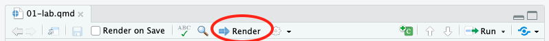
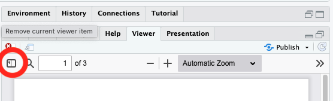

Module 13: Homework Instructions
Purpose
In this week’s homework, you will be asked to demonstrate your ability to run and interpret mixed effects models.
Access the Starter File for Module 13
Go to posit.cloud and then navigate to the course workspace via the left sidebar.
- Look for the course workspace called “Statistical Methods Spring 2025”
Open the project titled Module 13: Homework This module contains the starter files that you will use for the lab and for your homework.
Starter Files
In the Files pane you should see this R Notebook:
- mod-13-hw-starter.qmd
Open up mod-13-hw-starter.qmd.
Render it!
Click the button called “Render” (circled in the image below) and then double check to see that your document rendered in the Viewer pane. It is always a good idea to occasionally check that the document still renders correctly after making changes.

Load Packages
Today, we’ll be using the following packages:
- tidyverse: a collection of packages for doing data analysis in a “tidy” way
- ggrain: a package for creating raincloud plots
- emmeans: a package for examining simple effects
- easystats: to autmatically generate an ICC
- lme4: for running multilevel models
- lmerTest: for generating test statistics (with Satterthwaite df)
- partR2: for generating semi-partial R^2
- performance: for assessing model assumptions
Please load these packages using the library() function. If the packages don’t load, you may need to install.packages() first.
Research scenario
This dataset comes from ManyBabies. As described on the website, ManyBabies is: “…a collaborative project for replication and best practices in developmental psychology research. Our goal is to bring researchers together to address difficult outstanding theoretical and methodological questions about the nature of early development and how it is studied.”
The specific data we will be using is data that I collected in my lab at the University of Oregon to contribute to the first ManyBabies effort (MB1), the goal of which was to replicate a robust finding in infancy research, specifically that infants prefer to listen to infant-directed (IDS) over adult-directed speech (ADS). Sixty-nine labs from 16 different countries participated. However, you will be analyzing the data from only one lab. In the full study, we additionally included lab as a random effect, but you won’t do that here.
In the study, infants listened to clips of infant- and adult-directed speech as their looking to a central fixation stimulus (a bright checkerboard) was measured. Researchers hypothesized that infants would look longer at the checkerboard when hearing infant-directed speech. Each infant was presented with 16 total trials, and each trial was a different recording of infant-directed or adult-directed speech. The dependent variable is the time infants spent looking to the screen. In your model, you will examine how speech type (IDS vs. ADS) and infant age impact infants’ looking time.
Read in the Data
The data file is called mb_oregon.csv. Read in the data, name it mb_oregon. Check it out using View(). Make any necessary edits to the data (e.g., turning variables into factors).
The data has 6 columns:
- lab: you can ignore this variable, it is the same for everyone (Baldwin Lab @ U Oregon)
- subid: unique subject identifier
- trial_num: trial number, you won’t use this in analyses either
- trial_type: whether the infant listened to infant-directed speech (IDS) or adult-directed speech (ADS) on that trial
- age_mo: infant age, in months
- looking_time: time infants spent looking to the screen on each trial, in seconds
Q1: What are the possible fixed factors for this model? What are the possible random factors?
[answer Q1 here]
Q2: Generate a summary table that shows the mean, standard deviation, and range (i.e., minimum value and maximum value) of looking times for trials that presented IDS and trials that presented ADS.
Q3: Center the age variable across infants (i.e., grand-mean center).
Q4: What is the reason we might want to GRAND-mean center rather than group-mean center the age variable?
[answer Q4 here]
Q5: Generate a raincloud plot to visualize the relation between trial type (IDS vs. ADS) and looking time.
Q6: What does this plot suggest about the relation between trial type and looking time?
[answer Q6 here]
Q7: Generate a scatterplot with a linear regression line overlayed to visualize the relation between age and looking time.
Q8: What does this plot suggest about the relation between age and looking time?
[answer Q8 here]
Q9: Generate an ICC to determine how much variance in looking time is explained by trial type.
Q10: Does this ICC suggest that we should include subjects as a grouping variable? Why or why not?
[answer Q10 here]
Q11: Fit a model predicting looking_time from trial_type and age_mo_centered (no interaction). Include a random intercept for subid.
Q12: Interpret the model parameters for the fixed effects. How much variance is attributable to the random intercept for subjects? How much variance is left over?
[answer Q12 here]
Q13: Now, let’s test the influence of adding a random slope for trial type. Fit a model predicting looking_time from trial_type and age_mo_centered (no interaction). This time, include a random intercept for subid and a random slope for trial_type.
Q14: Interpret the model parameters for the fixed effects. How much variance is attributable to the random intercept for subjects? …the random slope for trial type? How much variance is left over?
[answer Q14 here]
Q15: Can we include a random slope for age? Why or why not?
[answer Q15 here]
Q16: Let’s determine whether the random intercept and slope model fits the data better than the model with just a random intercept. To do this, use the test_likelihoodratio() function from the {performance} package.
Q17: Does the model that includes a random slope for trial_type improve model fit over the model with just a random intercept for subid? Why or why not?
[answer Q17 here]
Q18: Now, let’s determine whether adding an interaction between trial_type and age_mo_centered improves model fit. Add the interaction term to the better fitting model (based on your likelihood ratio test above).
Q19: Interpret the model parameters for the fixed effects. How much variance is attributable to the random intercept for subjects? How much variance is left over?
[answer Q19 here]
Q20: Let’s determine whether the model with the interaction term fits the data better than the model with just main effects. To do this, use the test_likelihoodratio() function from the {performance} package.
Q21: What is the best fitting model?
[answer Q21 here]
Q22: What are the fixed effects in your final model?
[answer Q22 here]
Q23: Generate effect sizes for the overall best fitting model and all of the fixed effects in your best fitting model (hint: you will use the r2 and partR2 functions as well as calculating a Cohen’s d “by hand”).
Q24: Use the check_model() function from the {performance} package to check the assumptions of the best fitting model. How do these model assumptions look?
Render and submit your document.
Make sure that you I can see all of your answers in the rendered document!
To receive credit for this homework, submit a rendered PDF version of your file to “Module 13: Homework Submission” on Canvas.
- At the top of the .qmd file, change “format: html” to “format: pdf”
- Click “Render” at the top of the document
- Your document will open in a browser tab
- If your document opens in the “Viewer” pane, click the “sidebar” button (circled in image below).
- If you get a popup warning, click “Try Again” (may be specific to Mac)

- Click the “Save” icon on the top right (circled in the image below)
- Save wherever you keep your class documents and upload your file to Canvas